Introducción:
Podemos computar DN numéricamente usando la DFT (la transformada discreta de Fourier), que utiliza las muestras de una señal periódica 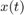 durante un período. El intervalo de muestreo es T segundos. Por lo tanto, hay: 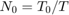 número de muestras en un período: 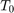
Para encontrar la relación entre DN y las muestras de x (t), 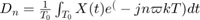
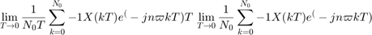
donde x (kT) es la muestra KTH de x (t) y 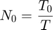$ 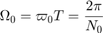$ En la práctica, es imposible hacer  . Podemos hacer T pequeño, pero no cero, lo que provocará que los datos aumenten sin límite. Por lo tanto, ignoraremos el límite en T con la comprensión implícita de que T es razonablemente pequeño. T distinto de cero dará lugar a algún error computacional, que es inevitable en cualquier evaluación numérica de una integral.El error resultante de T distinto de cero se denomina error de aliasing. Por lo tanto, podemos expresar como:
. Podemos hacer T pequeño, pero no cero, lo que provocará que los datos aumenten sin límite. Por lo tanto, ignoraremos el límite en T con la comprensión implícita de que T es razonablemente pequeño. T distinto de cero dará lugar a algún error computacional, que es inevitable en cualquier evaluación numérica de una integral.El error resultante de T distinto de cero se denomina error de aliasing. Por lo tanto, podemos expresar como:
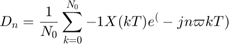
Ahora, 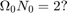$. Por lo tanto, ej 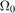$ (k + N 0) = ej ? 0 k sigue que 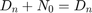$
La propiedad de periodicidad DN + N0 = DN significa que más allá de n = N0/2, los coeficientes representan los valores para n negativo.Por ejemplo, cuando 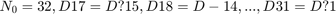$. El ciclo se repite de nuevo a partir de n = 32. Para este proposito necesitamos muestras de x (t) durante un período a partir de t = 0. En este algoritmo, también es preferible que 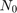 sea una potencia de 2, que es 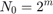$, donde m es un entero.
Contents
Ejemplo 6.1
piloto()
Undefined function or variable 'piloto'. Error in Practica5 (line 32) piloto()
Ejemplo 6.2
ejercicio6_2_()
Ejemplo 6.4
Ejercicio6_4_()
Ejemplo 6.5
Ejercicio6_5_()
Ejemplo 6.7
Ejercicio6_7_()
Computer Example C6.2
f=@(t) exp(-t/2); t=[0:0.001:20]; plot(t,f(mod(t,pi))) sumterms = zeros(25, length(t)); sumterms(1,:) = 0.504; %15 armonicos for n = 1:size(sumterms,1)-1 sumterms(n+1,:) = 0.504/(1+4*n*1j).*exp(2*n*t*1j); end x_N = cumsum (sumterms); figure(1); clf; ind = 0; for N = [0,1:2:size(sumterms, 1)-1] ind = ind+1; subplot (3,3,ind); plot (t,x_N(N+1,:), 'k',t,f(mod(t,pi))+0j, 'r--'); axis ([0 20 -0.2 1.2]); xlabel ('t'); ylabel (['x_{',num2str(N),'} (t)']); end
Métodos númericos
T_0 = pi; N_0 = 256; T = T_0/N_0; t = (0:T:T*(N_0-1))'; M = 10; x = exp(-t/2); x(1) = (exp(-pi/2) + 1)/2; %-------- figure(1) D_n = fft (x)/N_0; n = [-N_0/2:N_0/2-1]'; for a = 1:1:5 mag_dft(a)=abs(fftshift(D_n(a))); end for a = 1:1:5 ang_dft(a)=angle(fftshift(D_n(a))); end mag_dft ang_dft clf; subplot (2, 2, 1); stem(n, abs(fftshift (D_n)),'k'); axis ([-M M -.1 .6]); xlabel('n'); ylabel('|D_n|'); subplot (2, 2, 2); stem(n, angle(fftshift(D_n)),'k'); axis([-M M -pi pi]); xlabel ('n'); ylabel('\angle D n [rad]'); %------ T_0 = pi; N_0 = 256; T = T_0/N_0; W_0=2*pi/T_0; t = (0:T:T*(N_0-1))'; M = 10; x_0 =@(t) exp(-t/2); x_1 =@(t) exp(-t/2)*exp(-1j*W_0*t); x_2 =@(t) exp(-t/2)*exp(-2j*W_0*t); x_3 =@(t) exp(-t/2)*exp(-3j*W_0*t); x_4 =@(t) exp(-t/2)*exp(-4j*W_0*t);
Hallando los D0,...D4 (n positiva) por trapecio compuesto
figure(2) n=[0:1:4]; D_n=[trap_com(x_0,0,pi,pi/2)/T_0,trap_com(x_1,0,pi,pi/2)/T_0,trap_com(x_2,0,pi,pi/2)/T_0,trap_com(x_3,0,pi,pi/2)/T_0,trap_com(x_4,0,pi,pi/2)/T_0]; mag_trap=abs(D_n) ang_trap=angle(D_n) clf; subplot (2, 2, 1); stem(n, abs( (D_n)),'k'); axis ([-M M -.1 .6]); xlabel('n'); ylabel('|D_n|'); subplot (2, 2, 2); stem(n, angle((D_n)),'k'); axis([-M M -pi pi]); xlabel ('n'); ylabel('\angle D n [rad]'); hold on
De acuerdo a Lathi, en el ejemplo 6.5, que se desarrolló en el R10, la serie de Fourier exponencial compleja tiene Dn: 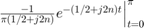 Para llegar al resultado más preciso, no se utilizó el resultado final de Lathi que indica 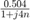. Sino que desarrollando, se encontró: 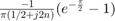
for n=2:1:5 mag_ex(n)=abs((-exp(-pi/2)+1)/(pi*(0.5+2j*(n-1)))); end mag_ex(1)=abs((-exp(-pi/2)+1)/(pi*(0.5))); for n=2:1:5 ang_ex(n)=angle((-exp(-pi/2)+1)/(pi*(0.5+2j*(n-1)))); end ang_ex(1)=angle((-exp(-pi/2)+1)/(pi*(0.5))); T = table(mag_dft',ang_dft',mag_trap',ang_trap',mag_ex',ang_ex'); T(1:5,:); T.Properties.RowNames = {'D0','D1','D2','D3','D4'}; T.Properties.VariableNames{'Var1'} = 'Abs_DFT'; T.Properties.VariableNames{'Var2'} = 'Ang_DFT'; T.Properties.VariableNames{'Var3'} = 'Abs_Trap_Com'; T.Properties.VariableNames{'Var4'} = 'Ang_Trap_Com'; T.Properties.VariableNames{'Var5'} = 'Abs_Exacto'; T.Properties.VariableNames{'Var6'} = 'Ang_Exacto' % En su forma rectangular DFT=mag_dft.*exp(1j.*ang_dft); TRAP=mag_trap.*exp(1j*ang_trap); EXAC=mag_ex.*exp(1j*ang_ex); D= table(DFT',TRAP',EXAC'); D.Properties.RowNames = {'D0','D1','D2','D3','D4'}; D.Properties.VariableNames{'Var1'} = 'Dn_por_DFT'; D.Properties.VariableNames{'Var2'} = 'Dn_por_Trap_comp'; D.Properties.VariableNames{'Var3'} = 'Dn_exacto' % Comparación DFT_EXAC=abs(EXAC-DFT); TRAP_EXAC=abs(EXAC-TRAP); CMP= table(DFT_EXAC',TRAP_EXAC'); CMP.Properties.RowNames = {'D0','D1','D2','D3','D4'}; CMP.Properties.VariableNames{'Var1'} = 'ERROR_DFT'; CMP.Properties.VariableNames{'Var2'} = 'ERROR_TRAP' %Por lo tanto se puede ver que el algoritmo DFT es más preciso que el del %trapecio compuesto, puesto que hubo menor error que el valor exacto.